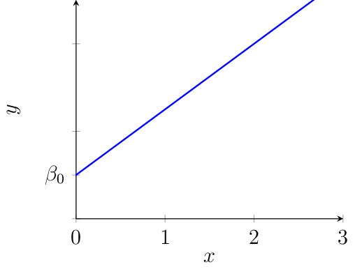
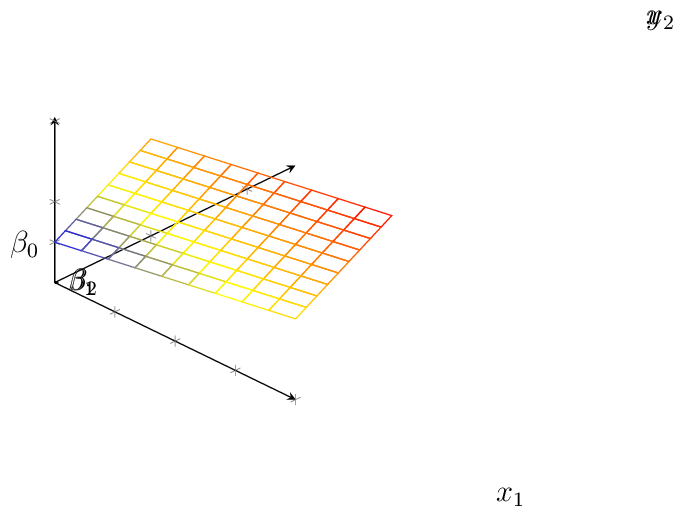
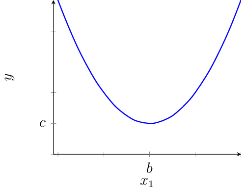
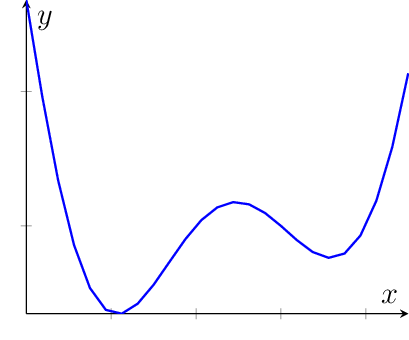
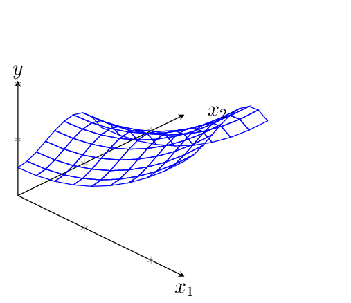
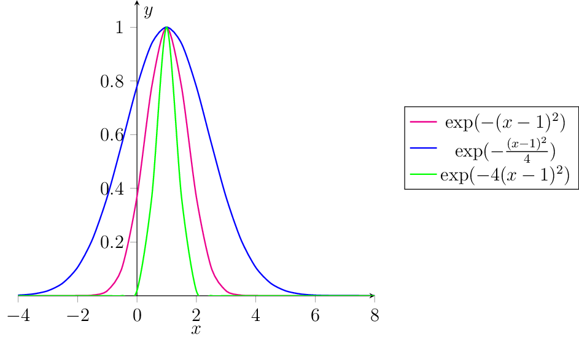
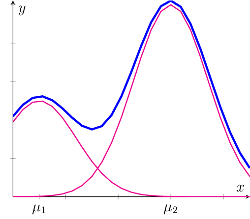

Regression Functions#
The possibilities to select a class of functions that are suited to model a given regression task are numerous. Typical function choices are exponential, logarithmic, polynomial functions or any composition of those. How can we make a machine learn which function would be best when we have so many choices?
The trick which is used in regression is to learn a linear combiation of predefined functions. For example, if we are unsure if the feature-target relation is exponential or logarithmic, then we can define our regression function as a weighted sum of exponential and logarithmic functions:
This formalization allows us to learn a function \(f\) by means of the parameters \(\beta_1\) and \(\beta_2\). Those parameters can then be optimized after we define a loss function for the regression task. The functions which we use to compose our function \(f\) (here \(\log(x)\) and \(\exp(x)\)) are called basis functions.
The main insight (which we will discuss in the following for various basis functions) is that nonlinear functions such as \(f(x)\) in Eq. (7) can be represented as linear functions in a transformed feature space. Linear functions \(f:\mathbb{R}^d\rightarrow \mathbb{R}\) have the form
Affine Functions#
We start with a simple function class: the affine functions. Affine functions are linear functions with a bias term.
Example 11 (Affine functions in two dimensions)

An affine function \(f:\mathbb{R}\rightarrow\mathbb{R}, f(x)= \beta_1x+\beta_0\) has a slope \(\beta_1\) and a bias term \(\beta_0\). The slope is visible in the graph: if we move one to the right on the horizontal axis, then we go the slope value up (or down, if the slope is negative). The bias term indicates the value where the graph meets the vertical axis. We can write an affine function mapping from the real values as a linear function mapping from the \(\mathbb{R}^2\).
The function \(\bm{\phi}(x)=\begin{pmatrix}1\\x\end{pmatrix}\) is called a feature transformation, the vector \(\bm\beta\in\mathbb{R}^{2}\) determines the parameters of the function.
Example 12 (Affine Functions in Three Dimensions (d=2))

An affine function \(f:\mathbb{R}^2\rightarrow\mathbb{R}, f(\vvec{x})= \beta_2x_2+\beta_1x_1+\beta_0\) has two slopes \(\beta_1,\beta_2\) and a bias term \(\beta_0\). In direction of the \(x_1\) coordinate, the function has slope \(\beta_1\) and in direction of the \(x_2\) coordinate it has the slope \(\beta_2\). As a result, an affine function in two variables looks like a flat surface. The bias term incates again the value where the graph meets the horizontal axis. We can write an affine function mapping from \(\mathbb{R}^2\) as a linear function mapping from the \(\mathbb{R}^3\).
where the feature transformation is defined as \(\bm{\phi}(\vvec{x})=\begin{pmatrix}1\\x_1\\x_2\end{pmatrix}\) and the parameters are given by \(\bm\beta\in\mathbb{R}^{3}\).
From the examples, we can see how to generalize the feature transformation \(\bm\phi\) to any affine function \(f:\mathbb{R}^d\rightarrow \mathbb{R}\):
As a result, we get a parametrization of the function class of affine functions as the inner product of the feature transformation vector and the parameter vector, which indicates a linear function:
Polynomials#
Functions that contain curvature can be modelled as a linear function in a transformed function space. Here we explore the function class of polynomials.
Example 13 (Polynomials of Degree k=2 (d=1))

A function \(f:\mathbb{R}\rightarrow\mathbb{R},\ f(x)= a(x-b)^2+c\), mapping a real value to a polynomial of degree two, is defined over three parameters \((a,b,c)\). The minimizer is given by the point \((b,c)\) and the value of \(a\) determines how narrow or wide the parabola is. We can write this function as a linear function in a three-dimensional transformed feature space.
The feature transformation \(\bm{\phi}(x)=\begin{pmatrix}1\\ x\\ x^2\end{pmatrix}\) maps to three basis functions \(f_1(x)=1\), \(f_2(x)=x\) and \(f_3(x)=x^2\). A weighted sum of these basis functions defines then the parabola, where the parameters are given by the vector \(\bm\beta\in\mathbb{R}^{3}\). Note that we can’t directly read the properties of the parabola from the \(\beta\)-parameters as we did with the parameters \((a,b,c)\). If needed, we could compute the original parameters from \(\beta\) though.
Example 14 (Polynomials of Degree k (d=1))

The parametrization of a parabola over the linear product of the basis functions and a weight vector \(\bm\beta\) is easily generalizable to the parametrization of a polynomial of degree \(k\). We consider here still only functions \(f:\mathbb{R}\rightarrow\mathbb{R}\), mapping from the one-dimensional space.
The feature transformation is here \(\bm{\phi}(x)=\begin{pmatrix}1\\ x\\\vdots\\x^k\end{pmatrix}\), and the parameter vector is \(\bm\beta\in\mathbb{R}^{k+1}\).
Example 15 (Multivariate Polynomials of Degree k (d=2))

We discuss now a degree \(k\) polynomial \(f:\mathbb{R}^2\rightarrow \mathbb{R}\) mapping from the two-dimensional space \(\mathbb{R}^2\). There are actually various ways to define the polynomial in a vector space. A popular way to define a polynomial in more than two variables is over a weighted sum of all combinations of the one-dimensional basis functions. Using now a multi index, a polynomial in two variables is defined as
where the feature transformation maps now to a \((k+1)^2\)-dimensional vector space, \(\bm\phi(\vvec{x}),\bm\beta\in\mathbb{R}^{(k+1)^2}\). The basis functions are here the set of \(\{x_1^{i_1}x_2^{i_2}\mid 1\leq i_1,i_2\leq k\}\).
We generalize now the defintion of polynomials of degree \(k\) as a linear function by the multiplication of all possible one-dimensional basis functions:
Gaussian Functions#
We introduce now a third way to define a function class for the regression task. This method has the advantage that the dimensionality of the transformed feature space is easy to adjust. The idea is to use Gaussian functions as basis functions.

The Gaussian radial functions are parametrized by a scaling factor \(\gamma\) and the mid point \(\bm\mu\).
Example 16 (Local Gaussian Radial Basis Functions)

The plot above shows the graph that we get when defining our function as \(f:\mathbb{R}\rightarrow\mathbb{R}, \ f(x)=0.5\exp(-(x-0.5)^2) + \exp(-(x-3)^2)\). The graph of the added Gaussians has two maxima. Approximating a graph with a polynomial that has two maximizers requires a degree of four, which translates to five basis functions. With Gaussian basis functions, we need only two.
The sum of weighted Gaussian basis functions is modelled by a linear function as follows:
The feature transformation \(\bm{\phi}(x)\) has a dimensionality equal to the number of selected basis functions. We define the function class of a sum of \(k\) Gaussians as:
The drawback of using Gaussian radial basis functions is that we need to determine the mean values beforehand. A popular strategy is to select a subset of the training data points as the mean values or a predefined grid of points.
Summary#
In summary, we have defined three function classes:
Affine functions:
\[\mathcal{F}_{aff}=\left\{f:\mathbb{R}^d\rightarrow \mathbb{R}, f(\vvec{x})= \bm{\phi}_{aff}(\vvec{x})^\top\bm{\beta}\middle\vert \bm{\beta}\in\mathbb{R}^{d+1}\right\} \]Polynomials of degree \(k\):
\[\mathcal{F}_{pk}=\left\{f:\mathbb{R}^d\rightarrow \mathbb{R},f(\vvec{x})=\bm{\phi}_{pk}(\vvec{x})^\top \bm{\beta} \middle\vert \bm{\beta}\in\mathbb{R}^{(k+1)^d} \right\} \]Sum of \(k\) Gaussians:
\[ \mathcal{F}_{Gk}=\left\{f:\mathbb{R}^d\rightarrow\mathbb{R},f(\vvec{x})=\bm{\phi}_{Gk}(\vvec{x})^\top\bm{\beta}\middle\vert \bm{\beta}\in\mathbb{R}^k\right\} \]